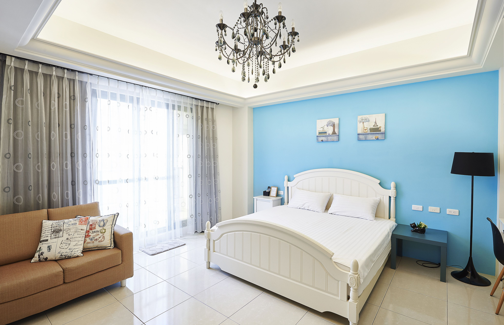
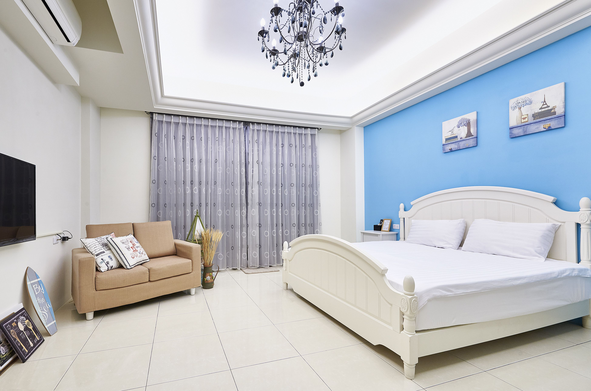
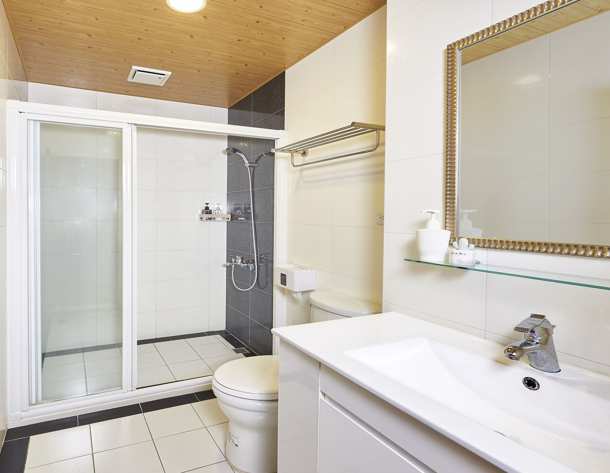
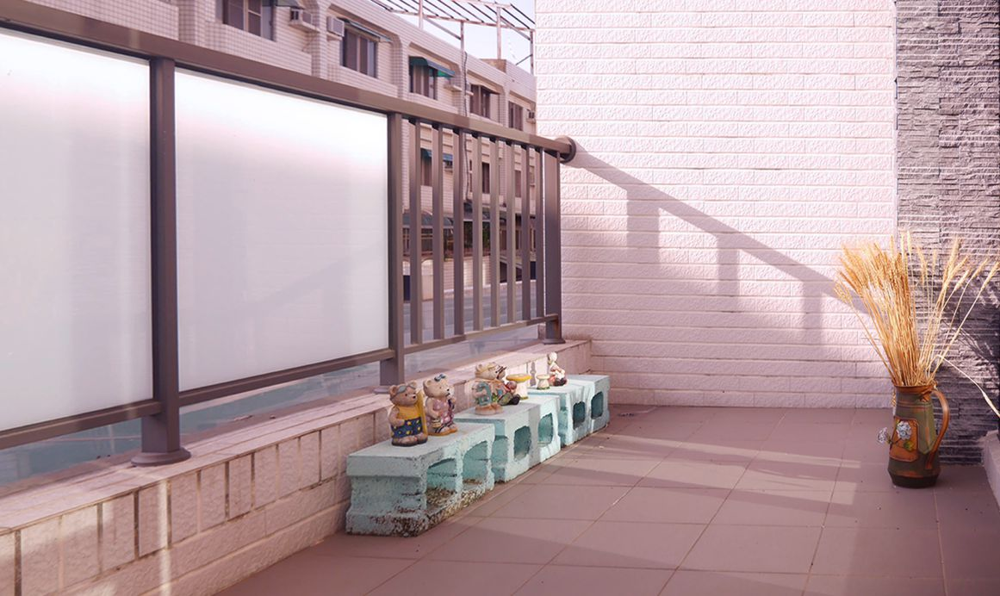
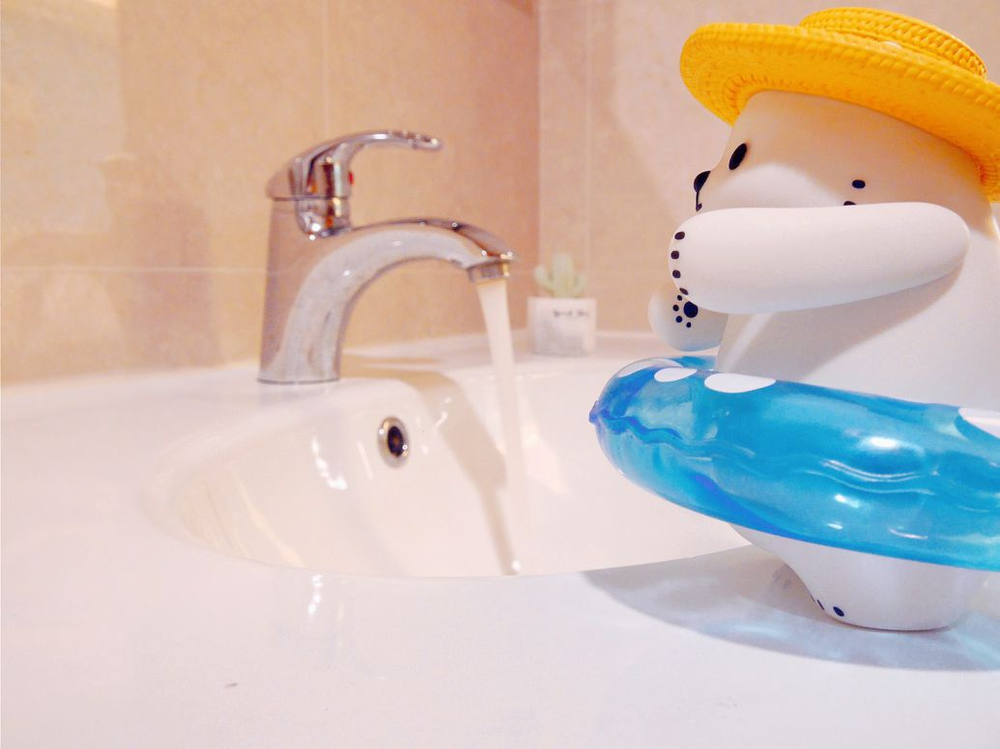

房型介紹
房型介紹
< 返回

| 房型名稱 | 平日 | 週五、週日 | 週六 | 床型 |
|---|---|---|---|---|
| 奈良 四人房 | 2,680 | 3,180 | 3,380 | 155x190cm 兩大床 |
| 香波藍 雙人房 | 1,580 | 1,880 | 2,200 | 185x190cm 特大床 |
| 千本宮 雙人房 | 1,380 | 1,680 | 1,880 | 185x190cm 特大床 |
| 原宿白 雙人房 | 1,380 | 1,680 | 1,880 | 185x190cm 兩大床 |
房價定義：
- 平日：週一～週四
- 續住第二日起另有折扣優惠
- 春節假期、國定假日、連續假期之定價，依民宿公告為準
- 包棟優惠：10 人包棟，3 間雙人房 + 一間四人房，可入住 4-12 人
奈良 日式四人房
入住人數：4
我要訂房※訂房前請詳閱訂房須知房內設備
- 32 吋液晶電視（100 多台隨選）
- 免費無線上網WiFi
- 日本變頻冷氣設備
- 太陽能環保穩定電熱水器
- 獨立乾濕分離淋浴間
- 珪藻土環保浴墊、擴香
- 盥洗用品（含毛浴巾、牙刷）
- 吹風機、棉花棒、刮鬍刀、梳子
- 迷你小陽台
- 台灣製飯店級好眠彈簧雙人床
- 方便停車，免費且距離極近
- 可提早寄放行李
- 當地旅遊諮詢
- 自製私房美食地圖
- 活動場地協辦
- 代為安排預約包車接送、旅遊
- 台南市觀光DM文宣品
- 提供桌遊、撲克牌
- 提供打麻將(限包棟)
- 客廳：40吋液晶電視、冷氣、容納整棟房客的團聚空間
- 餐廳：多人座位，附設插座，兼具工作區功能
- 廚房：餐具杯碗盤(不提供開伙)
- 沖泡設備：冷熱水壺、茶包、咖啡包
- 飲水機：溫、熱
- 洗手間
- 冰箱